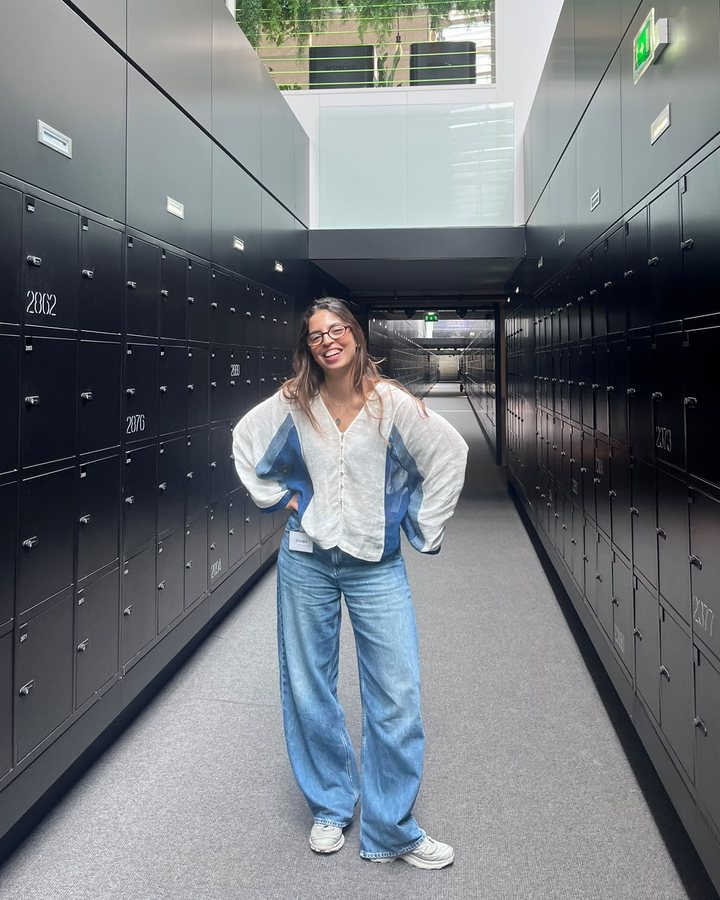

We track the signals
European Tech Intelligence Platform
Follow the data. Understand the trends.
A lightweight intelligence terminal for European startup funding, investor activity, capital flows and the EU policy that shapes them.
About
TechCap Intelligence is an independent venture. It exists to become a go-to intelligence and engagement resource for people and organisations navigating Europe’s technology and investment landscape.

Why it exists
Data on European startups, venture capital, investors, technologies and regulation is published every day, across databases, reports, institutions and national media. Few people have the time to connect it.
TechCap Intelligence does that work: it collects and structures the signals, interprets them, and brings together the people they concern.
Foundations
Experience
The founder brings 9 years of experience across technology, innovation and emerging-market ecosystems, working with investors, startups, corporates, international institutions and innovation organisations.
That experience includes work with organisations such as Briter, Expertise France and Station F, as well as engagements involving international organisations and institutions.
These organisations are named as past professional experience. They do not endorse and are not affiliated with TechCap Intelligence.
How we work
What we do
We track the signals
Follow the data. Understand the trends.
A lightweight intelligence terminal for European startup funding, investor activity, capital flows and the EU policy that shapes them.
We interpret the market
Go beyond the numbers.
Ecosystem mapping, investment research and policy analysis, scoped to the market, sector or mandate you need to understand.
We connect the ecosystem
Connect the people shaping the ecosystem.
Panels, roundtables and introductions designed from market knowledge, so the right people have a conversation worth having.
Let's explore how we can work together.